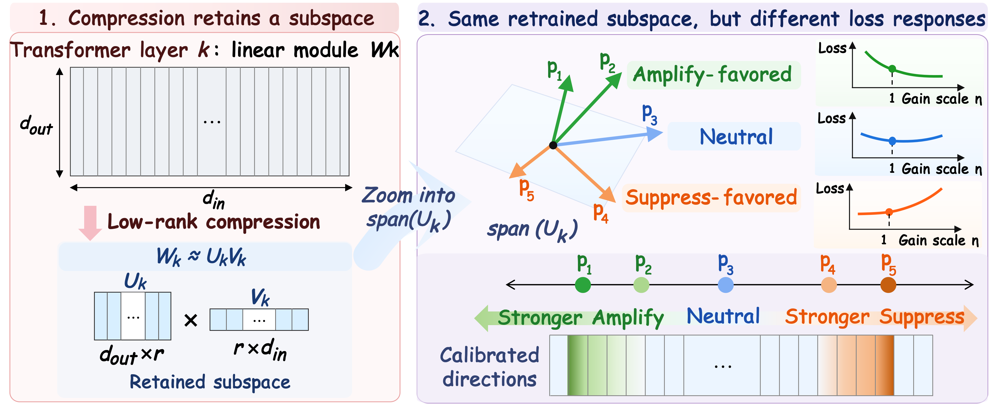
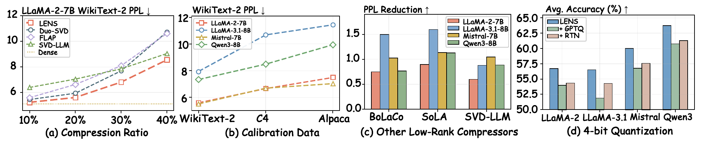
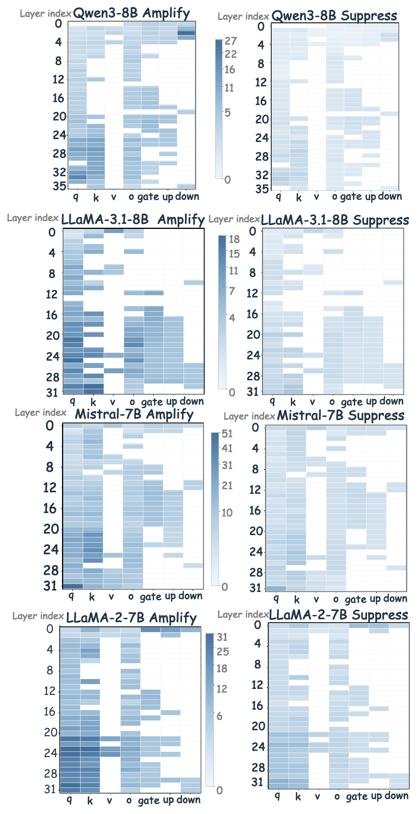
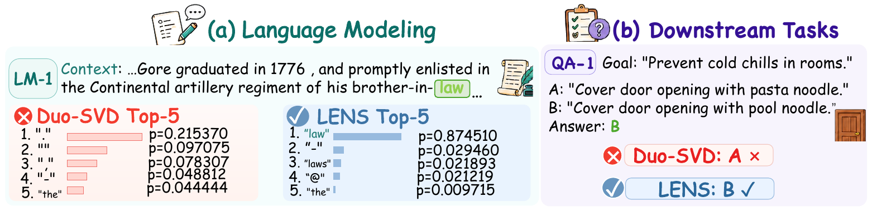

What survives
Compression fixes a compact retained representation under a strict parameter budget.
ICLR 2027 submission · LLM compression
LENS calibrates the salience of what compression keeps—without changing its rank, retained subspace, or inference cost.
01 / Overview
Low-rank compression decides which directions survive. LENS asks the missing question: should each retained direction contribute more, less, or not at all to the language-modeling objective?

Compression fixes a compact retained representation under a strict parameter budget.
The same subspace can contain directions with distinct, even opposing, loss responses.
Directional gain is aligned to loss, then folded back into the fixed low-rank factors.
02 / Method
At every stage, LENS identifies reliable directions in the retained low-rank space, estimates their relative gains, and accepts the joint update only when held-out NLL improves reliably.
LENS updates only U. The calibrated gain is folded offline into the output factor; rank, V, preserved columns, and inference cost stay fixed.
The final paper flowchart will be placed here without changing this layout.
03 / Protocol
The calibration protocol separates discovery, fitting, scale selection, and final acceptance. Test and downstream benchmarks remain sealed until evaluation.
Build the response eigenbasis within the retained subspace.
Keep only directions whose confidence interval supports their sign.
Choose the shared feasible scale with paired NLL.
Apply only when the mean and 95% upper bound both improve.
04 / Main Results
At a unified 20% compression ratio, LENS achieves the lowest WikiText-2 perplexity and the highest average downstream accuracy across four model families.
0.34 lower than Duo-SVD
+1.48 points over Duo-SVD
first-place task results, including ties
| Method | PPL ↓ | Avg. ↑ |
|---|
05 / Why A → S?
Suppress is not profiled on the original compressed model. It is reprofiled after Amplify because the loss landscape has changed.
06 / Evidence
LENS retains its advantage across compression ratios, calibration datasets, low-rank initializers, and subsequent 4-bit quantization.

07 / Calibration Anatomy
Amplify produces broader recovery across layers and module families. The subsequent Suppress stage is smaller and more selective—matching the sequential ablation evidence.

08 / Prediction Recovery
In language modeling, LENS restores the correct next token. In downstream QA, it recovers a correct answer that the frozen Duo-SVD model misses.

09 / Resources
The released implementation includes the fixed Duo-SVD baseline, formal A→S calibration, evaluations, and baseline adapters.
10 / Citation
@article{lens2027,
title = {What Survives Is Not Enough: Loss-Aligned Directional Salience Calibration for LLM Compression},
author = {Anonymous Authors},
journal = {ICLR 2027 submission},
year = {2027}
}